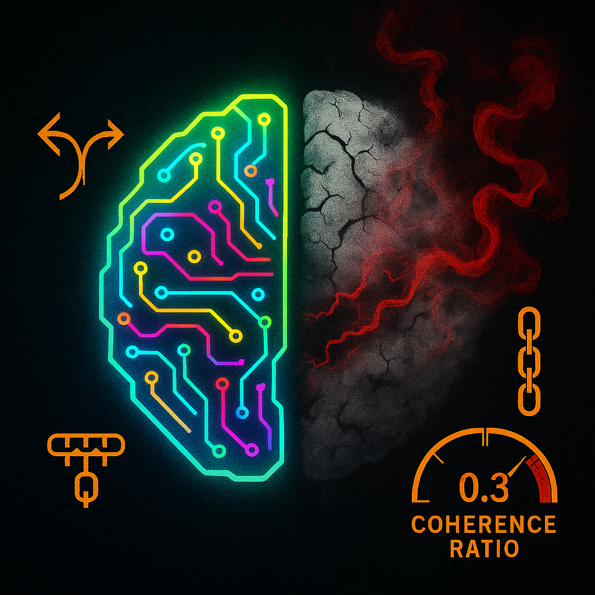

Depending on the report you read, somewhere between 70–90% of AI initiatives fail to reach sustained production or deliver meaningful ROI. I sat with that range for a while after reading the latest enterprise AI adoption and implementation reports. Somewhere between "most" and "almost all" of what we build dies between demo and deployment.
I have been there. You spend weeks tuning your agent, perfecting the prompts, testing in a controlled environment. It works beautifully in your dev setup. Then you deploy to production and watch it unravel in ways you never anticipated.
This is not just a 2026 problem, it is the wall enterprise AI is hitting right now. Companies are pouring millions into AI infrastructure, hiring teams of ML engineers, and watching their agents fail silently in production while stakeholders lose confidence.
At PhantomByte, we have deployed OpenClaw across multiple production environments. I have watched agents that aced every test case suddenly start hallucinating customer data. I have seen context windows decay over time until the agent forgets what conversation it is even in. I have debugged cascading failures where one bad token choice triggers a chain reaction that takes down an entire workflow.
The gap between demo and production is not just about scale. It is about the invisible failures that do not show up in your test suite. This article is about what actually breaks, how we caught it, and the monitoring patterns that keep our agents alive in production.
The Problem: Three Silent Failures That Kill Production Agents
Failure Mode 1: Hallucination Drift
Your agent usually does not suddenly start hallucinating. It drifts. Over days or weeks, the confidence thresholds slip. What was once a 95% confident answer becomes 87%, then 82%. The model starts filling gaps with plausible-sounding fiction. Let it go on long enough and it will start to lie.
We had a customer support agent that worked flawlessly for three weeks. Then tickets started coming in with wrong product specs. The agent was not "broken," it was drifting. The underlying model had updated, our prompt templates had not accounted for the shift, and suddenly the agent was confidently wrong about SKU numbers.
The scary part? Our latency metrics looked perfect. Token counts were normal. Everything appeared healthy while the agent slowly poisoned customer trust. Even if you are paying close attention, it is hard to see this happening, which is part of what makes it so brutal when it does.
Detection pattern: We built a hallucination confidence tracker that logs the model's self-reported confidence scores alongside human verification flags. When confidence diverges from accuracy by more than 10%, we alert, not when it fails but when it starts wobbling. In practice, it is easy to blame the model, but more often than not, something changed in your setup: prompts, tools, data, or the model version itself.
Depending on the model and API, you may only have access to self-reported confidence, logprobs, or rough proxies. We treat these as approximations, calibrate them offline where possible, and still find the divergence trend more valuable than raw accuracy alone.
Failure Mode 2: Context Decay
Context windows are not infinite. More importantly, they degrade. After 50+ turns in a conversation, the agent starts losing thread coherence. It forgets earlier constraints. It contradicts itself. It makes decisions based on stale or ignored context. In the early stages, this is almost impossible to detect until, out of nowhere, you have a full-blown problem on your hands.
I debugged a sales qualification agent that was disqualifying leads it had previously qualified. The conversation history showed clear buying intent from turn 5, but by turn 60, the agent was asking budget questions it already had answers to. The context had not been evicted, it had become noise.
This is not just about token limits. It is about the signal-to-noise ratio in long-running sessions. The agent can technically access all the context, but the attention mechanism and retrieval heuristics start weighting recent tokens over historical ones.
Detection pattern: We track context coherence scores, essentially measuring how often the agent references information from earlier in the conversation versus only the last few turns. When that ratio drops below 0.3, we know context decay is happening.
You do not need perfect semantic parsing to start; even simple heuristics (ID-tagged facts, required fields, conversation checkpoints) can give you a coherence signal that is good enough to alert on.
Failure Mode 3: Cascading Failures

One bad decision triggers three more bad decisions. Then a workflow branch fails. Then a downstream agent inherits corrupted state. Cascading failures are the production killer that does not exist in isolated testing. What looks like a minor miscommunication in logs is often a symptom of a deeper chain reaction.
We had an onboarding agent that occasionally generated malformed JSON. Rare, maybe 1 in 500 runs. But when it happened, the parsing agent would fail, the validation agent would time out, and the user session would hang. Three agents, one root cause, total workflow collapse.
The isolated tests never caught this because each agent was tested independently. The cascade only appeared when agents interacted under production load with real user behavior patterns.
Detection pattern: We implemented failure chain tracing. When any agent in a workflow fails, we log the entire dependency chain and measure blast radius. If one agent's failure rate correlates with downstream failures at r>0.7, we treat it as a cascade risk and prioritize a fix.
The Solutions: Seven Metrics That Actually Matter
Most teams track latency, throughput, and token counts. Those are necessary, but they are not sufficient. They look great on dashboards while your agent quietly rots. Here are the seven metrics we track that actually predict failure.
1. Confidence–Accuracy Divergence
Measure the gap between what the agent says it knows and what humans verify as correct.
divergence_score = abs(model_confidence - human_accuracy)
alert_threshold = 0.10 # 10% divergenceWe log every agent response with its confidence score (self-reported or logprob-derived, depending on the model), then sample a slice (for example, 5%) for human review. When divergence crosses 10%, we investigate before customers do.
This does not require perfectly calibrated confidence. What matters is trend and spread: is the model getting more confidently wrong over time?
2. Context Coherence Ratio
Track how often the agent references early conversation context versus recent turns.
coherence_ratio = references_to_turns_1_to_20 / references_to_turns_50_to_70
healthy_threshold = 0.3A ratio below 0.3 means the agent is "living in the moment" and forgetting the conversation history. We approximate "references" with a mix of structured markers (IDs, fields) and lightweight semantic checks, not full semantic search on every turn.
3. Decision Consistency Score
Same input, similar context, does the agent make the same decision?
We run shadow deployments where the same query hits multiple agent instances or versions. If decisions diverge by more than 15% on production-relevant paths, we know non-determinism is bleeding into business logic. You cannot eliminate all non-determinism, but you can isolate where it is acceptable (content generation) versus where it is not (approvals, routing, compliance).
4. Hallucination Flag Rate
How often does downstream validation catch fabricated or unverifiable information?
hallucination_rate = flagged_responses / total_responses
acceptable_threshold = 0.02 # 2%We built automated fact-checking hooks that verify claims against our knowledge base and schemas before responses reach users. When that rate climbs, we either tighten constraints or revisit the underlying model/prompt.
5. Workflow Completion Rate
Not just "did the agent respond," but "did the entire workflow finish successfully?"
An agent can succeed while the workflow fails. We track end-to-end completion (from user entry to business outcome), not just individual agent health. This catches cases where agents bounce errors or generate responses that look fine but stall the process.
6. Recovery Time After Failure
When an agent fails, how long until it returns to normal operation?
MTTR = mean_time_to_recover_normal_operation
target = < 5 * 60 # secondsFast recovery often matters more than squeezing out one more nine of uptime. We would rather have 99% uptime with 2-minute recovery than 99.5% with 30-minute recovery that burns trust and backlog.
7. User Escalation Rate
How often do users request human handoff?
escalation_rate = human_handoff_requests / total_sessions
warning_threshold = 0.08 # 8%This is the ultimate signal. If the escalation rate climbs, something is breaking, even if all technical metrics look green. When this moves, we pause feature work and go investigate experience quality, not just infra.
Predictive Detection: Catching Failure Before It Happens
The metrics above are diagnostic. They tell you what broke. You also need predictive signals that tell you failure is coming before users feel it.
Pattern 1: Confidence Drift Velocity
It is not just low confidence, it is confidence dropping over time. We track the velocity:
confidence_velocity = (confidence_t2 - confidence_t1) / time_delta
alert_when = confidence_velocity < -0.05 # per hour (example)A steady decline predicts hallucination drift hours before it becomes user-visible. You will see the trend in internal review and shadow traffic before support tickets pile up.
Pattern 2: Token Distribution Shift
The model's token probability distribution often changes before output quality visibly degrades. We monitor entropy in the output distribution where APIs expose logprobs, and use simpler proxies where they do not.
output_entropy = -sum(p_i * log(p_i))
spike_threshold = baseline_mean + 2 * baseline_stdWhen entropy spikes relative to baseline, the model is effectively more uncertain. That uncertainty tends to precede bad outputs by several hundred tokens of traffic. When logprobs are unavailable, we approximate this with pattern changes in outputs (longer answers, more hedging language, repetitive phrases).
Pattern 3: Conversation Turn Acceleration
Users start sending more turns per minute when the agent is not really helping. They are trying to course-correct.
turn_velocity = turns_per_minute_current / turns_per_minute_baseline
alert_when = turn_velocity > 1.5A 50% increase in turn velocity means users are working harder to get value. That is a leading indicator of satisfaction collapse. It suggests the agent is no longer doing the heavy lifting; users are rephrasing, retrying, and scaffolding the conversation just to reach the same outcome. When you see this pattern, the experience is already degrading—it just has not hit your ticket queue yet.
Production Implementation: OpenClaw's Monitoring Stack
Here is what we actually run in production. This is not theory, it is the stack that has worked for us so far.
What We Built
Agent Health Dashboard
Real-time visualization of all seven core metrics across every deployed agent, with color-coded health status, drift velocity graphs, and escalation rate trends.
Failure Chain Tracer
When any agent fails, this tool maps the entire dependency graph and calculates blast radius so we know within seconds which workflows are at risk.
Shadow Deployment Runner
Every production query also runs against a shadow agent instance or version. We compare decisions in near real time and flag divergence before it affects users.
Context Coherence Profiler
Analyzes conversation histories and scores context usage patterns. Flags sessions where the agent is forgetting earlier turns or contradicting prior facts.
What We Use (And Tradeoffs)
Prometheus + Grafana
Standard metrics collection and visualization. Great for time-series metrics like latency and throughput, much less useful for semantic quality. We lean on it for infra-level signals, not model behavior.
LangSmith
Excellent for tracing individual agent runs and debugging specific failures. We use it heavily in incident analysis, but less as a standalone production monitoring solution at scale.
Custom PostgreSQL Store
We log every key agent decision with confidence scores, context snapshots, and human verification flags. This powers drift analysis, coherence profiling, and offline experiments.
Slack Alerting
Simple but effective. When metrics cross thresholds, the on-call engineer gets a Slack message with direct links to the relevant dashboard and traces.
The Honest Tradeoffs
We built custom tooling because nothing off-the-shelf tracked the metrics we cared about. LangSmith does not natively measure confidence divergence or coherence ratios. Prometheus does not understand semantic drift.
But owning your own stack also means owning the technical debt. Every new metric requires engineering time. Every alert threshold needs tuning. There is no vendor to call when the coherence profiler breaks.
The tradeoff is a better fit for our specific needs versus ongoing maintenance burden. For most teams, we would recommend starting with LangSmith (or similar) plus custom metric logging, then layering on targeted custom dashboards and profilers once you know which signals actually move the needle for your use case.
You also pay for this with real money. Shadow deployments effectively double inference cost on monitored flows. Human review for calibration is labor. The trick is choosing a narrow set of high-leverage surfaces (high-value workflows, high-risk domains) instead of instrumenting everything everywhere from day one.
Your Next Steps: Monday Morning Action Plan
You do not need to build everything we built. Start with what moves the needle and iterate from there, focusing on the signals that most directly impact user experience and reliability. Once those are stable, you can layer in more sophisticated tooling.
Week 1: Instrument confidence scoring
Log the model's confidence (self-reported or logprob-derived) on every response where your provider allows it. Sample a small percentage for human review. Calculate divergence.
Week 2: Add escalation tracking
Track how often users request human handoff or abandon flows. This is your canary in the coal mine.
Week 3: Build failure chain tracing
When one agent fails, what else breaks? Map dependencies and log failure chains so you can see blast radius instead of isolated errors.
Week 4: Implement shadow deployments
Run parallel agent instances or versions and compare decisions on critical paths. Catch non-determinism and regressions before users do.
Month 2: Add context coherence profiling
Track how well your agent remembers and reuses conversation history over long sessions. Start with simple heuristics, then upgrade to semantic methods as needed.
Month 3: Build predictive drift detection
Monitor confidence velocity and, where feasible, token distribution entropy. Combine that with user behavior signals (turn acceleration, escalation creep) to catch failure before it hits customers.
The Real Talk
Here is what I wish someone told me before deploying our first production agent: your demo environment is lying to you. You can stress-test all you want, throw load tests and synthetic data at it, and you will still miss the quiet, weird failures that only show up in real user traffic.
The controlled test suite, the perfect prompts, the clean context, none of it prepares you for production chaos. Users do unexpected things. Models drift. Context decays. Failures cascade.
The ugly statistics about AI project failure are not primarily about model capability. They are about observation gaps. You cannot fix what you cannot see, and most teams are still flying blind on the metrics that actually matter to reliability and trust.
Start monitoring what matters. Not just latency. Not just token count. Start with the seven metrics above. Track them from day one. Alert on drift, not just hard failure. Be explicit about where you will pay the cost of shadow traffic and human review, and where you will not.
Your agents will break in production. That is guaranteed. The question is whether you will see it coming, how quickly you will respond, and whether your customers will be the ones to tell you. The more intentional you are about monitoring real signals instead of vanity metrics, the more likely you are to catch the slide early and keep small issues from turning into full-blown incidents.
I would rather know before they do.
Get More Articles Like This
Getting your AI agent setup right is just the start. I am documenting every mistake, fix, and lesson learned as I build PhantomByte.
Subscribe to receive updates when we publish new content. No spam, just real lessons from the trenches.